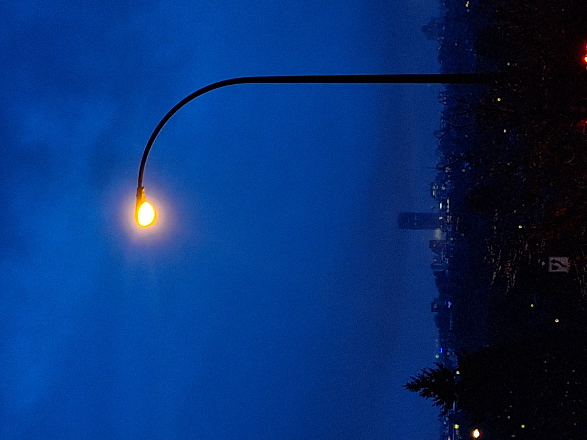

Photography captures life's essence, allowing me to express creativity, evoke emotions, and share
stories effortlessly.
Photography and nature share an intimate bond, capturing the essence of the world's most awe-inspiring landscapes, flora, and fauna. Through the lens, photographers unveil the intricate beauty of nature's marvels, from the gentle sway of wildflowers in a sunlit meadow to the majestic silhouette of mountains against a vibrant sunset sky. Each snapshot encapsulates a moment in time, preserving the raw emotions and untamed splendor of our natural world.

Photography becomes a medium through which we connect with nature on a profound level, evoking a sense of wonder, tranquility, and reverence for the Earth's abundant wonders. Whether it's the delicate details of a dew-covered spiderweb or the grandeur of a cascading waterfall, photography invites us to pause, observe, and appreciate the boundless diversity and enduring majesty of the natural world that surrounds us.
